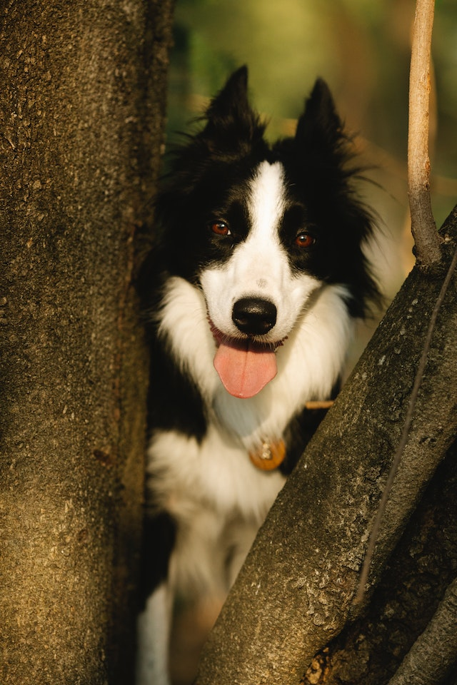

Border Collie
Herkomst
Border Colllies zijn veehoeders en zijn gefokt voor het schapendrijven, maar ze zijn kunnen ieder type kudde aan en zullen zelfs de kinderen in het gezin hoeden. Het ras komt oorspronkelijk uit de laagvlaktes en grenslanden van Groot-Brittannië en Schotland en gaat terug tot de 18e eeuw. Vermoed wordt dat de voorouders van de Border Collie andere soorten Collies waren, zoals de Bearded Collie en de Schotse Collie, en sommige rasgeschiedkundigen vermoeden dat er ook ooit eens met een spaniël is gekruist. In de 19e eeuw werden Border Collies populair onder de Engelse adel. Tegenwoordig worden ze nog steeds als kuddehond gebruikt maar zijn het ook gezinshuisdieren. Omdat ze gemakkelijk te trainen zijn, worden Border Collies ook als politie-, drugs- en explosievenhond gebruikt, en worden ze ingezet bij zoek- en reddingsacties. Ze doen het ook goed als blindengeleidehond. Borders zijn onlangs toegetreden tot de AKC showring, onder veel controversie en protesten van liefhebbers, die zich zorgen maken dat fokken op het uiterlijk het werkvermogen in gevaar brengt.Bron: HillsPet